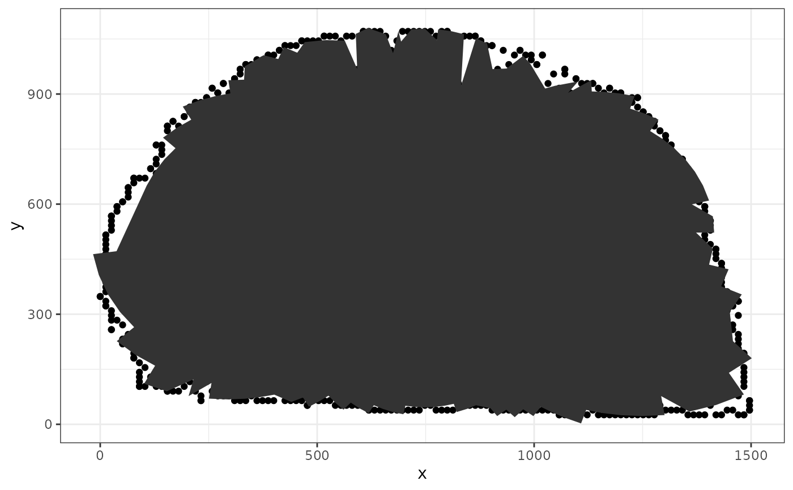

This function identifies the inner polygon of a given set of points. It uses a method of concentric mirroring around a center point, applies an alpha hull to the mirrored shape, and then mirrors the result back.
Arguments
- x
A numeric vector representing the
xcoordinates of the points.- y
A numeric vector representing the
ycoordinates of the points.- concavity
A strictly positive parameter that influences the shape of the inner polygon. Smaller values result in a shape that closely follows the inner boundary, while larger values create a shape that focuses more on the central area.
- center
A numeric vector of length 2, representing the
(x,y)coordinates of the center point for the mirroring process. IfNULL, the mid-ranges ofxandyare used.
Value
A data frame containing x and y coordinates that describe the inner polygon. The id variable indicates the order of the points.
Examples
x3p <- x3p_subsamples[[1]]
bounds <- x3p_boundary_points(x3p, 2)
polygon <- inside_polygon(bounds$x, bounds$y, 1)
library(ggplot2)
library(dplyr)
#>
#> Attaching package: ‘dplyr’
#> The following objects are masked from ‘package:stats’:
#>
#> filter, lag
#> The following objects are masked from ‘package:base’:
#>
#> intersect, setdiff, setequal, union
bounds %>%
ggplot(aes(x = x, y = y)) +
geom_point() +
geom_polygon(data = polygon) +
theme_bw()
